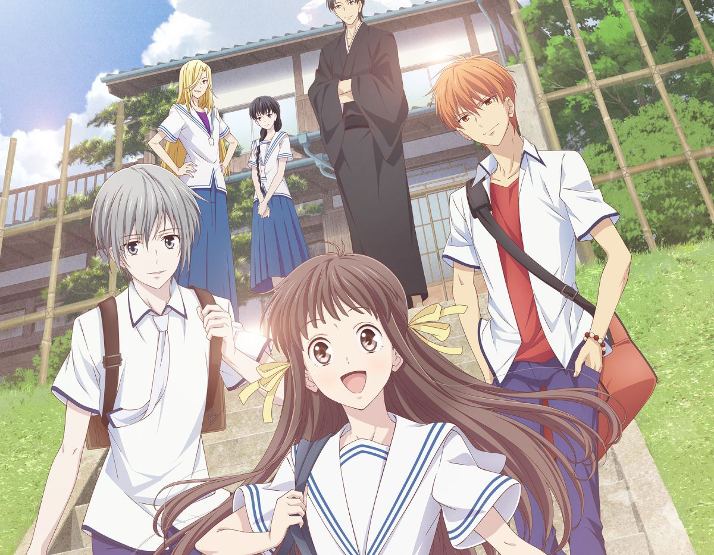
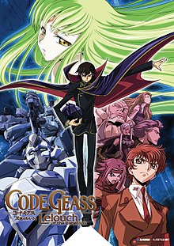
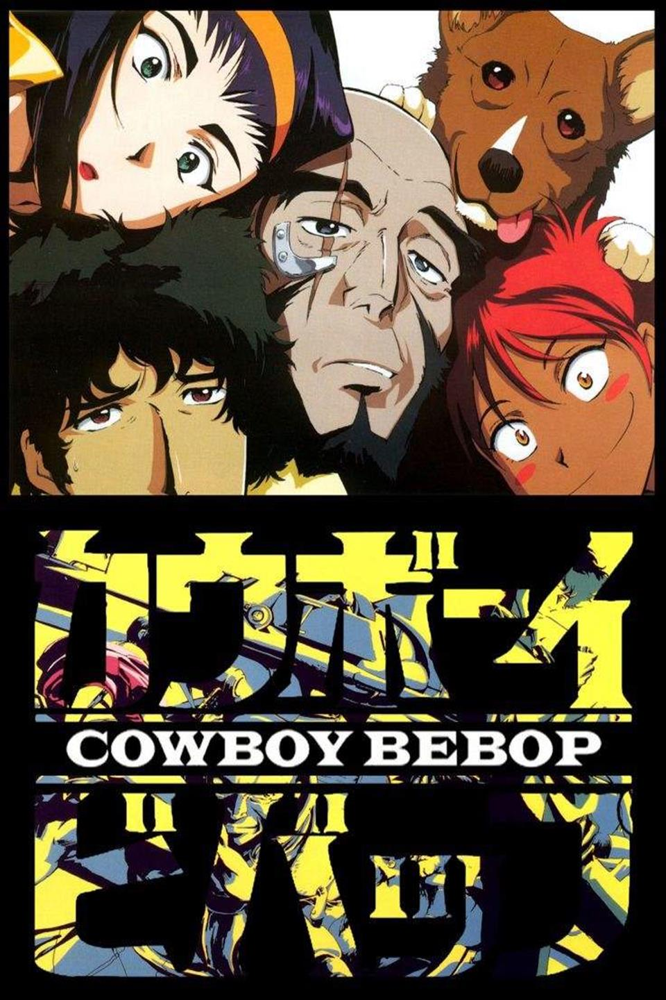

| Rank | Title | Score | User Rating |
| 1 | 
Demon Slayer
Genres: Action, Supernatural
|
10 | |
| 2 | 
Attack on Titan
Genres: Action, Drama, Fantasy, Mystery
|
10 | |
| 3 | 
Boruto: Naruto Next Generations
Genres: Action, Adventure
|
10 | |
| 4 | 
Black Clover
Genres: Action, Comedy, Fantasy
|
10 | |
| 5 | 
Fruits Basket 1st Season
Genres: Comedy, Drama, Romance, Slice of Life, Supernatural
|
10 | |
| 6 | 
Clannad
Genres: Comedy, Drama, Romance, Slice of Life, Supernatural
|
10 | |
| 7 | 
Code Geass: Lelouch of the Rebellion
Genres: Action, Drama, Sci-Fi
|
10 | |
| 8 | 
Hajime no Ippo
Genres: Comedy, Drama, Sports
|
10 | |
| 9 | 
Fire Force
Genres: Action, Supernatural
|
10 | |
| 10 |
Angel Beats
Genres: Action, Comedy, Drama, Supernatural
|
10 | |
| 11 | 
Lucky Star
Genres: Comedy, Slice of Life
|
10 | |
| 12 |
K-On
Genres: Comedy, Slice of Life
|
10 | |
| 13 | 
Naruto Shippuden
Genres: Action, Adventure, Comedy
|
10 | |
| 14 | 
Bleach
Genres: Action, Adventure, Comedy, Supernatural
|
10 | |
| 15 | 
One Piece
Genres: Action, Adventure, Comedy, Drama, Fantasy
|
10 | |
| 16 | 
Hunter x Hunter (2011)
Genres: Action, Adventure, Fantasy
|
10 | |
| 17 | 
Jojo's Bizarre Adventure
Genres: Action, Adventure, Supernatural
|
10 | |
| 18 | 
Tokyo Ghoul
Genres: Action, Drama, Horror, Mystery, Supernatural
|
10 | |
| 19 | 
Gintama
Genres: Action, Comedy, Sci-Fi
|
10 | |
| 20 | 
Ousama Ranking
Genres: Adventure, Fantasy
|
10 | |
| 21 | 
Haikyu!!
Genres: Comedy, Drama, Sports
|
10 | |
| 22 | 
Cowboy Bebop
Genres: Action, Adventure, Comedy, Drama, Sci-Fi
|
10 | |
| 23 | 
Jujutsu Kaisen
Genres: Action, Supernatural
|
10 | |
| 24 |
Made in Abyss
Genres: Adventure, Drama, Fantasy, Mystery, Sci-Fi
|
10 | |
| 25 |
Boku no Pico
Genres: Boys Love, Hentai
|
10 |